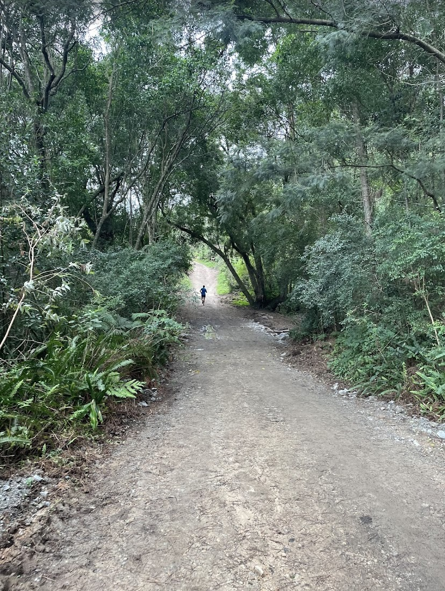
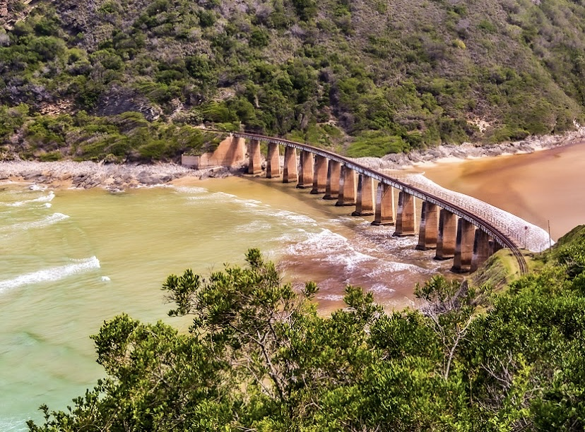
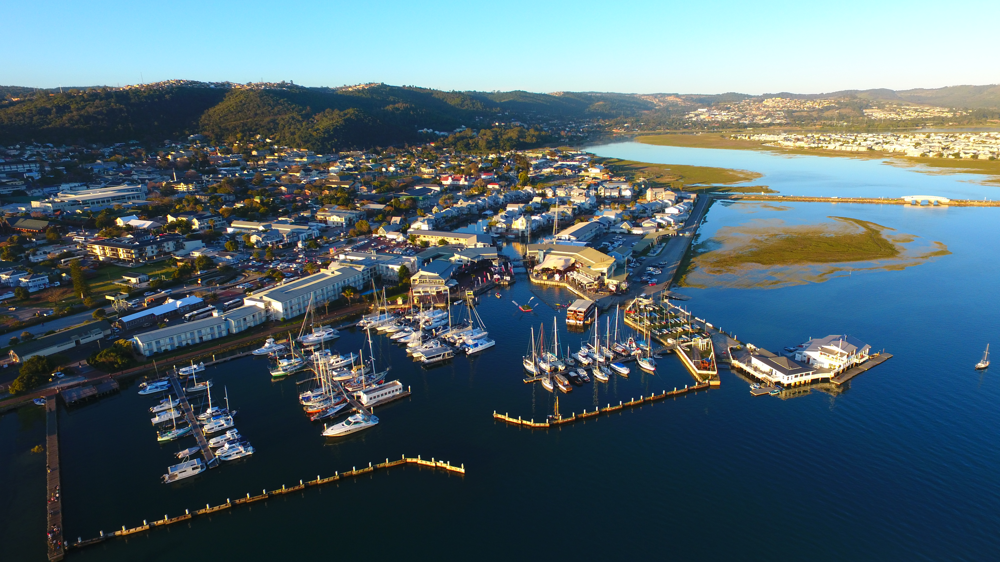
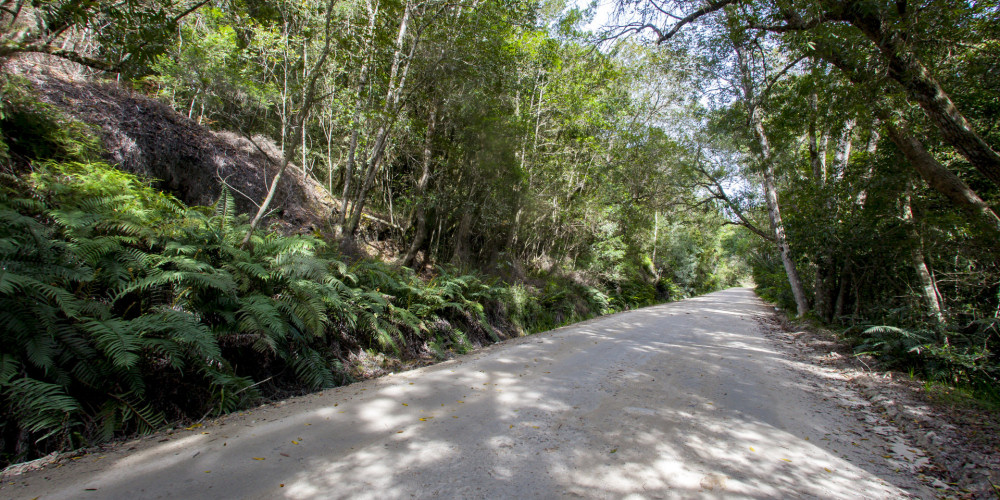
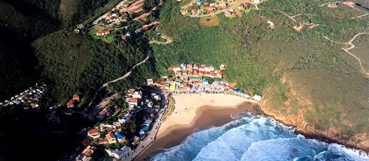
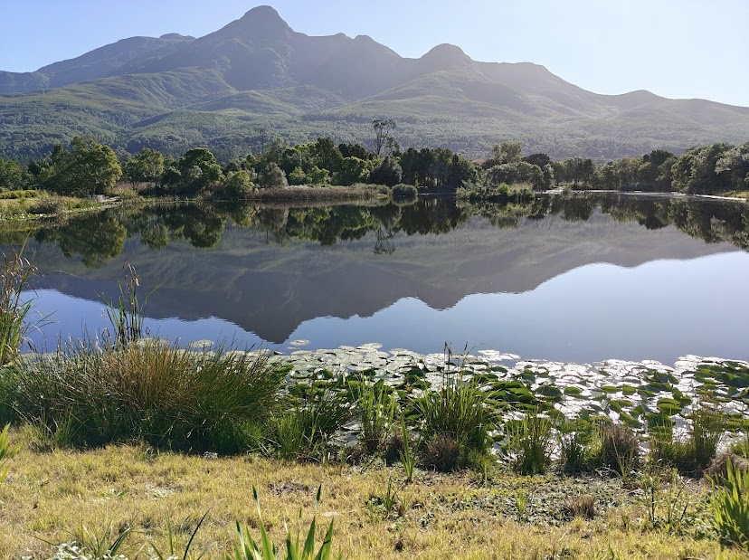
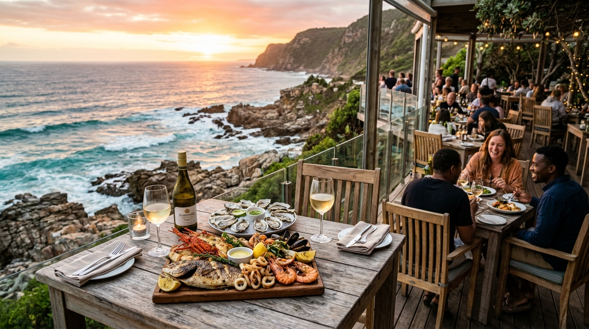
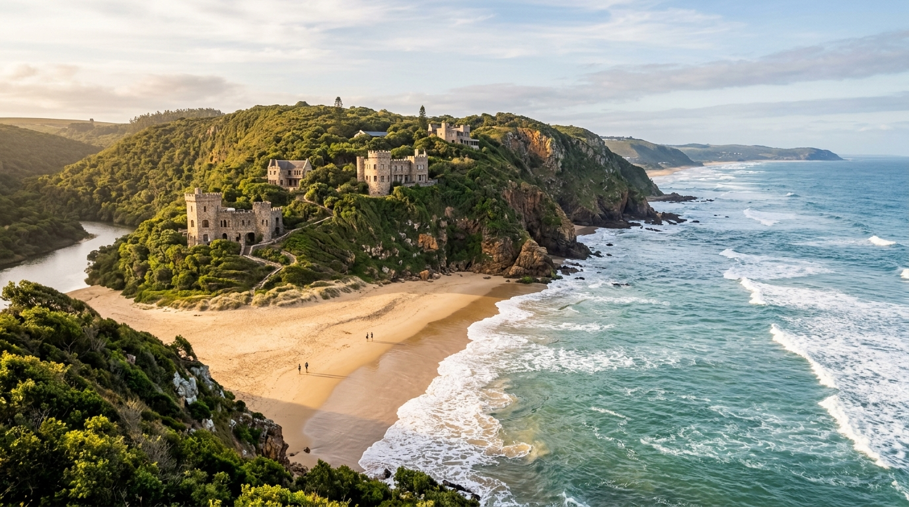

16 Top Hiking Trails in George & Across the Garden Route
From the summits of Cradock Peak and Outeniqua to the coastal cliffs of Robberg, Tsitsikamma suspension bridges, and Wilderness river gorges.
Expert trail reports, local advice, scenic road trips, and preparation tips curated by tourism explorer Moeketsi Motloung.

Hiking TrailsFrom the summits of Cradock Peak and Outeniqua to the coastal cliffs of Robberg, Tsitsikamma suspension bridges, and Wilderness river gorges.

AttractionsUncover the premier highlights of George, including strawberry picking at Redberry Farm, botanical gardens, steam train history, Touw River lagoon, and historic passes.

Day TripsEasy excursions within 1 to 2 hours of George: canoe the Wilderness waterways, admire the Knysna Heads, and walk Tsitsikamma suspension bridges.

Road TripsA step-by-step multi-day driving guide connecting Mossel Bay, George, Wilderness, Knysna, Plettenberg Bay, and Storms River.

Secret SpotsEscape the tourist crowds with off-the-beaten-path trails, tranquil tidal pools at Herold’s Bay, and historic mountain passes.

Packing & GearOur checklist for Garden Route weather: quick-dry clothing, sun protection, hydration systems, hiking boots, and trail snacks.

Dining & FoodFrom cliffside lagoon views at Knysna East Head to oceanfront sunset dining in Wilderness, explore 10 top scenic foodie hotspots.

Secret SpotsVenture beyond the highway: stone coastal castles at Noetzie, 1880s goldfield ghost towns, tidal snorkel pools, and 800-year-old trees.